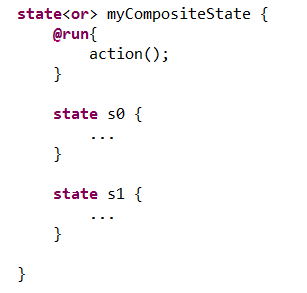
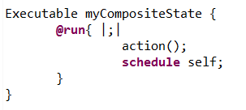
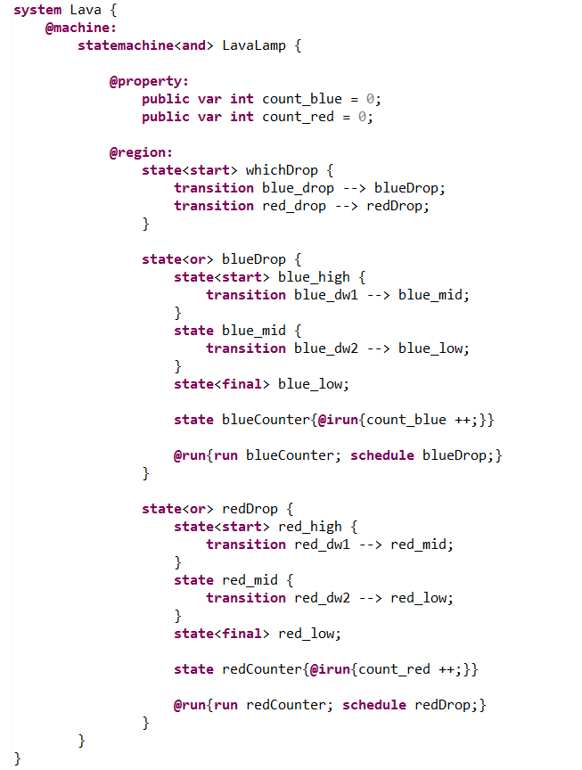
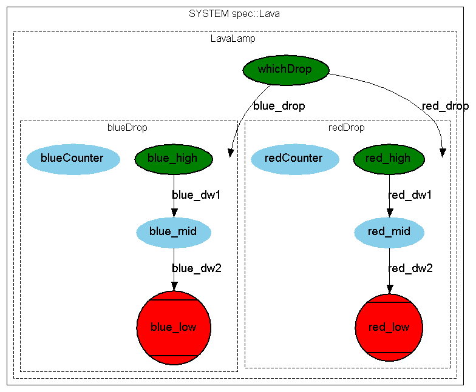
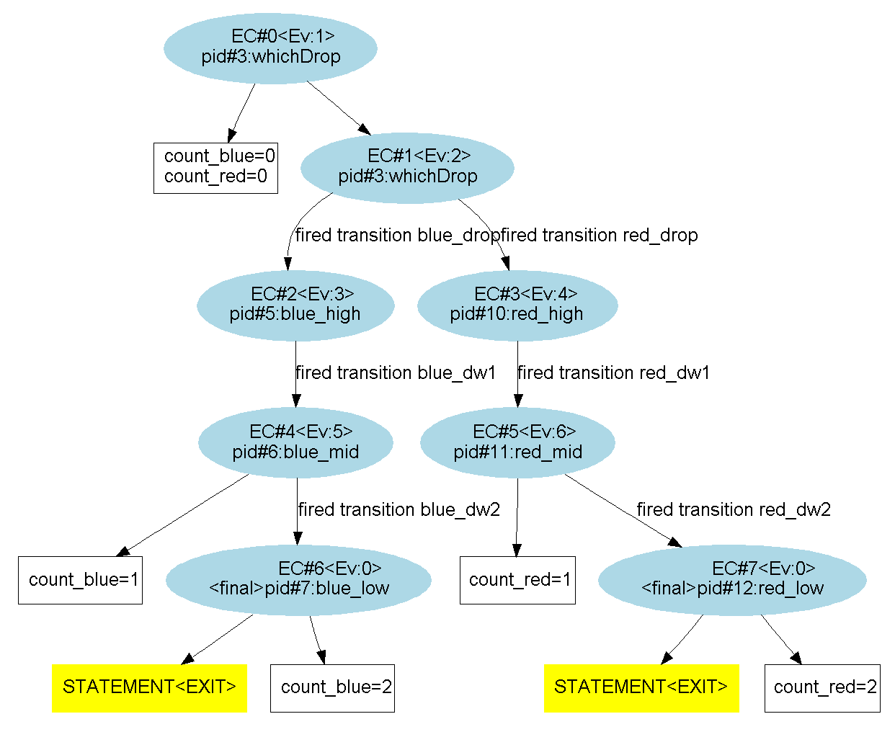
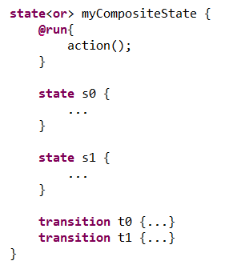
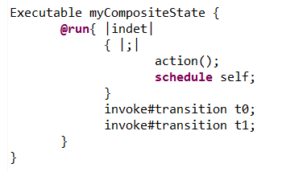
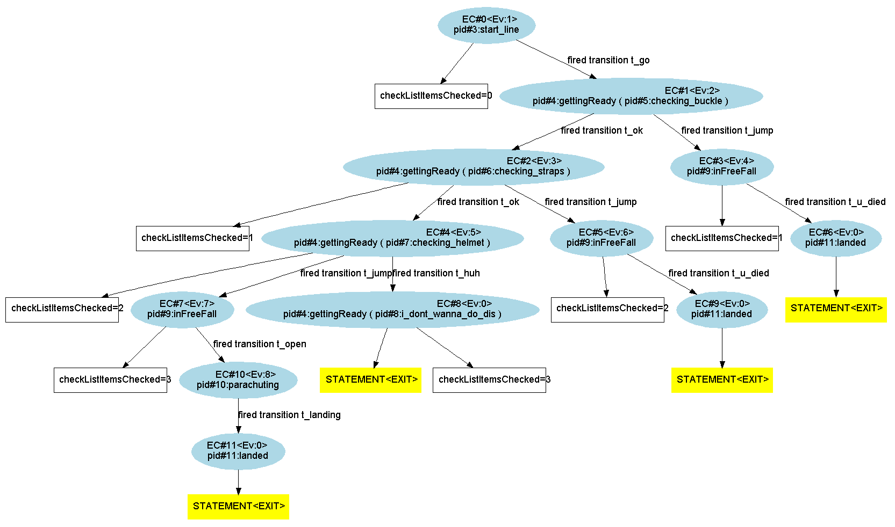
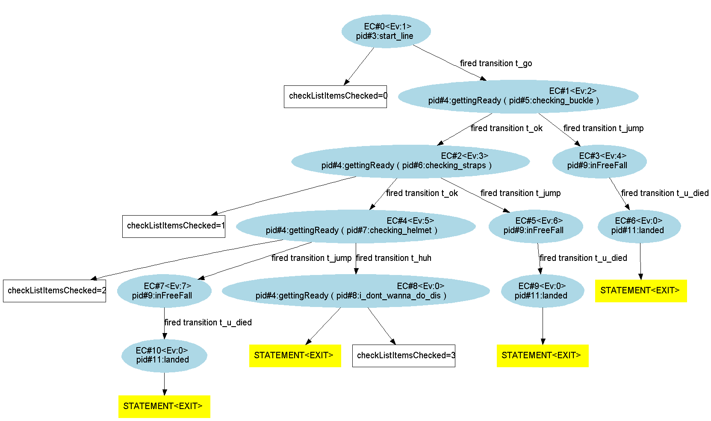

A state's "@run{...}" primitive evaluates outgoing transitions of its container state, according to the associated semantics. But the expert user can add code to be evaluated before outgoing transitions.
One of the possible uses of the "@run{...}" primitive is that of writing instructions inside that ought to be executed just before the next choice of transition is made.
The Inefficient Project Workflow example, is a prime example of this use of the "@run{...}" activity primitive. Indeed, for each "XTeamWorking" composite state, each time a substate transits to another, the "XTeamWorking"'s @run{...} is executed and therefore updates the workload of the Team. This is, among other things, useful for code factorization.
When we have a composite state :
When we implement the @run{...} activity primitive and we put an instruction "action();" (which does not include "schedule" or "run" of the parent machine) inside such as below :
The XLIA compiler interprets it as in the following :
If what's inside "@run{...}" includes "run" or "schedule" instructions, it may replace the default "schedule self".
Let's consider a LavaLamp statemachine. There are two ink drops; a red one and a blue one. The system describes a part of the lamp's cycle. Either one of the drop can fall from the top to the bottom.
The "blueDrop" is represented by a composite statemachine, as well as the "redDrop". In each of those, we'll be using the "@moe:@run{...}" in order to implement a counter, that will count the number of execution steps taken in the corresponding drop. The code is the following :
The system's graph is the following :
The exploration graph is the following; we can see the counters in action :
We notice that the counting starts after the "color_high" state is left. Indeed, it is because when entering the "colorDrop" composite state, we're not yet running it's inner "@run{...}" but the parent "LavaLamp"'s "@moe:@run{...}". Therefore, "run colorCounter" is not called.
When we have a composite state :
When we implement the @run{...} activity primitive and we put an instruction "action();" (which does not include "schedule" or "run" of the parent machine) inside such as below :
The XLIA compiler interprets it as in the following :
If what's inside "@run{...}" includes "run" or "schedule" instructions, it may replace the default "schedule self".
We notice that the "action();" is not taken when evaluating outgoing transitions !!! We'll see how it can affect the system in the following example.
Let's get back the exact same example used in "composite state's "@irun{...}" : complex case".
Here is the full exploration graph of the vanilla version :
Now, if we replace "irun" by "run" as the implemented primitive of the "gettingReady" composite state, the exploration graph becomes :
We see that when leaving the "gettingReady" state though the outoing transition "t_jump", the code "checkListItemsChecked ++;" is not executed anymore. This is due to the scheduling specificity that we've talked about in the theoretical part. This is also one of the differences between "run" and "irun".